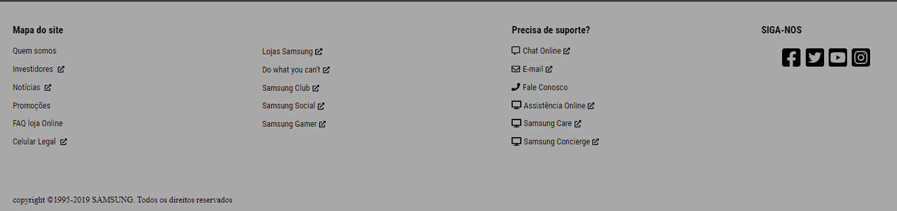

Footer Samsung
Clone feito do antigo rodapé do site samsung.com.br
Este Footer fiz para praticar CSS e HTML no início do curso.
Aqui o objetivo era apenas recriar uma parte do site da Samsung Brasil. Com muita dificuldade consegui trazer algo muito semelhante ao site verdadeiro. Foi um bom momento também para aprender a trabalhar com fontes e ícones externos.